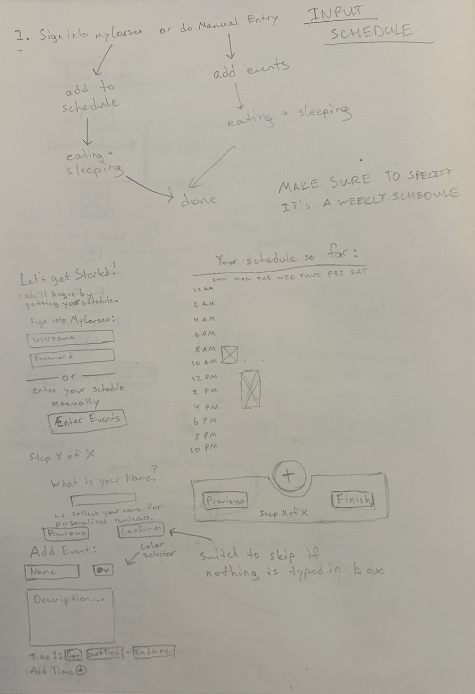

Helping New College Students Manage their Busy Lives
New college students face heavy workloads and high levels of responsibility while needing to adapt to a new environment. Many universities offer services that aim to streamline the process of adapting to a new campus, but new students still face significant struggles. Me and two other students were tasked with designing a prototype for an app or service that lessened these struggles.
Contents
Primary Goal
Ease the process of adapting to a college campus for new college students.
Research
My group and I wanted to reach as many students as we could in a short amount of time, so we decided on using a form to collect data on users. The form was split into the following 5 sections:
Demographics
Collected basic information such as the user's college and what year they were in.
Social Life
Assessed how the user made/found friends and if there were any difficulties in that process.
Academics
Assessed what students found difficult about academic work and how satisfied they were with it.
Responsibilities
Assessed how users dealt with managing their basic life needs (eating 3 meals a day, managing finances, etc.).
General Difficulties
Aimed to find what was the MOST problematic thing for students arriving to a new campus and found issues not assessed in prior sections.
The form had a total of 14 questions which we came up with as a group. Some specific questions that I contributed were:
- How satisfied were you with your major freshman year? (1-5)
- How many days a week did you eat all 3 meals?
- How did you find your first year roommate?
The form was distributed to Rochester Institute of Technology students via SnapChat, Discord, and Reddit. We waited roughly 1 week after distributing the form to analyze the results.
50 students responded to the form we distributed. Some key statistics we obtained from the results were:
“Academic workload/difficult classes”, “Keeping a Consistent Schedule”, and “Being Responsible for Yourself” were the biggest contributors to “General Stress.”
“Overload of Work” and “Finding time to study/complete work” were considered the hardest parts of academics.
We concluded that keeping track of classes, assignments, meetings, and responsibilities was the biggest struggle for new college students.
Defining System Goals
The main thing we wanted to do was help students improve their time management. We sought to accomplish this with 2 system goals:
Use reminders to allow the system to hold onto information instead of forcing the user to remember things (recognition vs. recall).
Offer suggestions for mealtimes and chores so that users don't have to think of times on their own. Additionally, connect with MyCourses, a service for classes used by the Rochester Institute of Technology, so that users don't have to specify when their classes are.
Creating User Models
Before diving into prototyping, my group and I created user models to guide our design decisions. We began by making 4 user profiles to specify generic “types” of users. For each profile, we indicated what the user's behaviors, goals, and frustrations were.
Here's an example of a user profile that I proposed:
Dissatisfied Freshman
Behaviors
- Unmotivated to complete their work
- Spends most of their day alone
- Lots of time spent stressed about changing to a new major
Goals
- Get through the semester while in a major they don't like
- Find friends with common interests
- Transition to a new major
Frustrations
- Doesn't like any of the work they have to do for class
- Feels that they don't have time to make friends
- Feels that campus resources for mental health and academic planning are rarely available
Based on our user profiles, we created 4 personas (1 for each profile) to define specific users that would be interacting with our app. We also described the scenario in which each user would be using our app in.
I created personas and scenarios for the “Dissatisfied Freshman” and “Passionate Scholar” profiles:
Lo-fi Prototyping and Assessment
We used our system goals and user models to determine the actions that our users could perform on our app. We settled on the following actions:
- Entering a Consistent/Permanent Schedule (classes, jobs, regular mealtimes, etc.)
- Viewing the Schedule
- Adding new Tasks and Events to the Schedule
- Finding On-Campus Events (event details are provided and events can be added to the schedule)
- Finding University Help Resources
- Controlling Reminders via Settings (allow users to control the frequency, type, and “assertiveness” of reminders)
I was tasked with designing a lo-fi prototype for “Entering a Consistent/Permanent Schedule” and “Adding new Tasks and Events to the Schedule.” I began by sketching out ideas on paper and then transitioned to Figma to solidify my ideas.
"Entering a Consistent/Permanent Schedule" Prototypes
Primary Design Sketches
Alternative Design Sketches
Digital Primary Design
Digital Alternative Design
"Adding new Tasks and Events to the Schedule" Prototypes
Primary Design Sketch
Digital Primary Design
Assessing the Lo-fi Prototypes
Before moving into Hi-Fi Prototyping, my group and I decided to evaluate our Lo-Fi Designs for issues. We used Jakob Nielson's 10 Usability Heuristics to assess our design. We assessed visibility of system status, match between system and real world, user control and freedom, and help and documentation as a group and divided the rest of the heuristics amongst ourselves (I assessed the heuristics of aesthetic and minimalist design and help users recognize, diagnose, and recover from errors).
Our most severe heuristic violations were:
User Control and Freedom
There was no defined way to delete an event or task that was added to the schedule.
Proposed Solutions:
- Add “minus” buttons to events that allow users to delete them. The “minus” buttons should open a confirmation dialogue or be toggled on and off via a “Remove Events” button to prevent accidental removal.
- Allow users to edit an events details by clicking on it, the event can then be deleted from the “edit” screen.
Help Users Recognize, Diagnose, and Recover from Errors
There were no error messages for attempting to add an event or task without filling in the necessary information. Additionally, there was no message telling users that an event conflicted with another event in their schedule.
Proposed Solutions:
- Provide a message that states what information is missing when a user tries to add an event or task. Alternatively, only enable the add button once the required information is entered.
- Give a message stating that an event the user is trying to add is conflicting with another event in their schedule. Allow them to “Cancel”, “Replace Event”, or “Add Anyway” (overload schedule). If they click “Add Anway”, provide a confirmation dialogue informing the user that this action will result in overlapping events.
Hi-fi Prototyping and Assessment
The assignment indicated that the Hi-Fi Prototype should only explore 2 - 3 key features of the app. As a result, my group and I decided to focus our efforts on Viewing the Schedule, Adding new Tasks and Events to the Schedule, and Finding On-Campus Events. All screens were made in Figma and could be interacted with.
Adding new Events (my work)
Viewing the Schedule (partner work)
Finding On-Campus Events (partner work)
Assessing the Hi-fi Prototypes
To assess the effectiveness of our designs, my group and I conducted task walkthroughs with potential users of our app. We had a series of pre- and post-task questions, and had 2 tasks for our users to perform.
The due date should be 05/03/25 at 11:59pm and it should be color coded as green.
I conducted 2 in-person task walkthroughs, and we tested our prototype with a total of 4 different users.
Based on the results from our task-walkthroughs, this is what I would change about my screens in a future iteration of the app:
Project Reflections
While the final output of this project was only a prototype, feedback from users suggested that they would use it if it were a full app. Specifically, users liked being able to find and add on-campus events to their schedule. The general scheduling features of the app were okay, but users did not think that they provided anything they couldn't already get with apps like Google Calendar. In the future, I would emphasize features that differentiate our app from other scheduling apps.
Overall, this project helped me improve my abilities to:
- Perform User Research + Analysis
- Make User Models
- Assess + Iterate on Designs
- Prototype Interactions in Figma